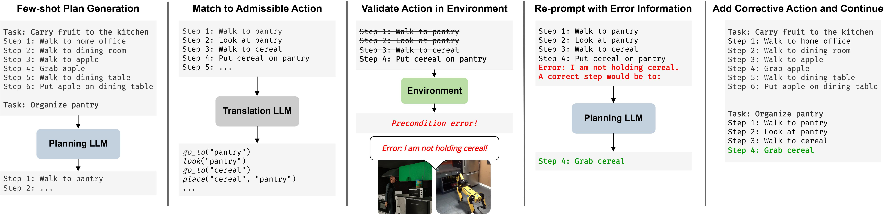

Methodology
CAPE uses an LLM to generate plans for tasks specified in natural language. When the agent fails to execute a step due to unsafisfied pre-conditions, we re-prompt the LLM with error information, utilizing latent commonsense reasoning and fewshot learning capabilities of LLMs to overcome pre-condition errors.
